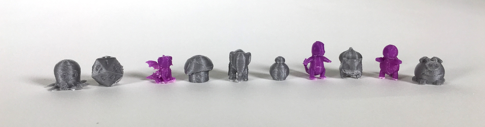

6.810 Engineering Interactive Technologies (fall 2018)
OpenCV Lab
work in progress
Here's what we are building today:
We are going to write a piece of Computer Vision software that extracts the position of the colored squares from each side of a Rubrik's cube and then solves the cube by giving you instructions on how to rotate each row/column.
Your job is to write the color-extraction with OpenCV.
We will give you code for the rest (i.e. the logic for solving the cube).
Where to place your code
In the code, you will find a function XX.
Please insert your code into this function.
Reading a Camera Image
Before we can read the live camera feed, we first have to initialize the camera like this:
/* Initializing the Camera * /
camera_port = 0 // your built in camera is typicall 0, any extra camera on USB is 1, 2 etc.
camera = cv2.VideoCapture(camera_port) // this returns the camera object and opens the video channel
Next, we can read frames from the camera like this:
/* Initializing the Camera * /
read image code
Doing an Action on Key-Press
It is often useful for debugging to do some action on keypress (e.g. quit the program, save a specific image from the camera).
Here is some code to e.g. quit your program on keypress of 'X'.
/* Doing something on Keypress * /
if key == X {
//stop program
}
Writing Frames to Disk
It is often a good idea to start developing a program on a single frame, aka a still image rather than trying to solve it right away with a live video stream, e.g. a single image in which you hold the rubriks cube into the camera.
Expand your code to save a single frame to disk on keypress of 'C' (capture).
/* Code for saving an image * /
frame write to disk
Reading a Camera Image

camera = cv2.VideoCapture(camera_port) // this returns the camera object and opens the video channel
if key == X {
//stop program
}
frame write to disk